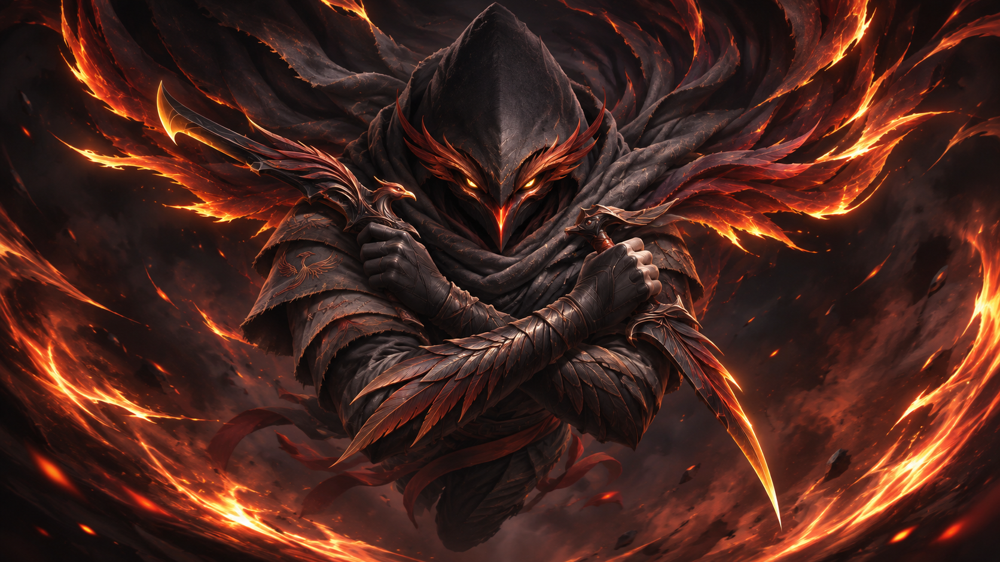

<!doctype html>
<html lang="zh-CN">
<meta charset="utf-8">
<meta name="viewport" content="width=device-width, initial-scale=1">
<title>Kiva 界面样张</title>
<link rel="preconnect" href="https://fonts.googleapis.com">
<link rel="preconnect" href="https://fonts.gstatic.com" crossorigin>
<link rel="stylesheet" href="https://fonts.googleapis.com/css2?family=Barlow+Semi+Condensed:wght@600;700&family=Noto+Sans+SC:wght@500;700;900&display=swap">
<!-- Preview only: the browser build compiles the classes at runtime. In the game, Trunk's
     rel="tailwind-css" compiles the same CSS ahead of time into a static file. -->
<script src="https://cdn.jsdelivr.net/npm/@tailwindcss/browser@4.1.11"></script>
<style type="text/tailwindcss">
  /* Layout: the UI fills the window at any resolution. Every size and offset is in rem, and the
     root font size follows the window (16px at 1920×1080), so the whole layout scales in
     proportion from 720p to 4K; elements stay anchored to the window edges. */
  @theme static {
    /* 朱雀: the protagonist and the main action. 青鸾: the sister, selection and guidance. */
    --color-zhuque: #d6382b;
    --color-ember: #fa5424;
    --color-gold: #f5b310;
    --color-qingluan: #23a596;
    --color-qingluan-hi: #5fd8c8;
    /* wasteland neutrals */
    --color-char: #1b1e21;
    --color-ash: #2a2f33;
    /* explore page: slate cards on a pale, misty page */
    --color-slate: #223b45;
    --color-mist: #efefef;
    --color-paper: #e9ebe8;
    --color-paper-2: #c6cbc9;
    --color-ink: #f3f4f2;
    --color-ink-2: #b8bebf;
    --color-ink-dark: #1a1d20;
    --color-common: #8a9194;
    --color-rare: #8f7bd6;
    --color-epic: #e7b23f;

    --font-sans: "Noto Sans SC", "PingFang SC", "Microsoft YaHei", sans-serif;
    --font-num: "Barlow Semi Condensed", "Arial Narrow", "Noto Sans SC", sans-serif;

    /* Type scale in rem (px at 1080p). The smallest step is 18px, so 12px at 720p. */
    --text-*: initial;
    --text-xs: 1.125rem;
    --text-sm: 1.25rem;
    --text-base: 1.375rem;
    --text-lg: 1.625rem;
    --text-xl: 2rem;
    --text-2xl: 2.5rem;
    --text-3xl: 3.25rem;
    --text-4xl: 4.5rem;
  }

  @layer base {
    /* 1280×720 → 10.67px, 1920×1080 → 16px, 2560×1440 → 21.33px, 3840×2160 → 32px. In a window
       that is not 16:9 the tighter side decides, so nothing is pushed off screen. */
    html {
      --ui-scale: 1;
      font-size: calc(min(100vw / 120, 100dvh / 67.5) * var(--ui-scale));
      height: 100%;
    }
    body { height: 100dvh; margin: 0; overflow: hidden; background: var(--color-char); color: var(--color-ink); line-height: 1.35; }
    :focus-visible { outline: 2px solid var(--color-qingluan-hi); outline-offset: 2px; }
  }

  /* readable white type on the scene */
  @utility shade { text-shadow: 0 .0625rem .125rem #000d, 0 0 .375rem #0006; }
  @utility num { font-family: var(--font-num); font-weight: 700; font-variant-numeric: tabular-nums; }
</style>
<style>
  /* Lobby: keep its existing anchors, spacing and content; share the explore plate language. */
  #lobby {
    --lobby-rule: #dbe5e54d;
    --lobby-plate: #223b45e8;
    color: var(--color-ink);
    text-shadow: 0 .08rem .12rem #14242cd9;
  }
  #lobby > svg { opacity: .45; }
  #lobby nav::before { background: var(--lobby-rule); }
  #lobby kv-menu-item button {
    text-shadow: .06rem .06rem 0 #14242c, 0 .15rem .35rem #14242c99;
    transition: color 150ms, text-shadow 150ms;
  }
  #lobby kv-menu-item button:hover { translate: none; color: white; text-shadow: 0 .1rem .3rem #14242c; }
  #lobby kv-menu-item button b { letter-spacing: .025em; }
  #lobby kv-menu-item[lead] button b { color: white; }
  #lobby kv-menu-item[lead] button b > i { background: var(--color-ember); box-shadow: none; }
  #lobby kv-menu-item button::after {
    content: ''; pointer-events: none; position: absolute; left: 0; right: 0; bottom: -.65rem;
    height: 1px; background: linear-gradient(90deg, #eef3f380, #eef3f300);
    opacity: 0; transition: opacity 150ms;
  }
  #lobby kv-menu-item button:is(:hover, :focus-visible)::after { opacity: 1; }
  #lobby > div { color: #d1d9dc; text-shadow: 0 .08rem .18rem #14242c; }
  #lobby kv-resource svg { filter: none; }
  #lobby kv-resource .num, #lobby > div .num { color: #eef2f2; }
  /* Explore follows the reference's quiet white field and compact industrial plates. */
  #sortie { --accent: var(--color-ember); --panel-width: 31.5rem; color: #263238; }
  #sortie #nodes { right: var(--panel-width); }
  #sortie #track { gap: 13rem; padding-inline: 7rem; transform: translateY(-1.15rem); }
  #sortie #track::before { background: #77858a; height: 1px; }
  #sortie > header { right: 0; top: 1.5rem; }
  #sortie > header h1 { font-size: 1.85rem; letter-spacing: 0; }
  #sortie > header small { margin-left: -13.8rem; margin-bottom: .15rem; color: var(--accent); }
  #sortie > div:has(> #to-lobby) { top: 1.3rem; left: 1.75rem; gap: 1.8rem; }
  #sortie #to-lobby, #sortie #to-home { width: 3.75rem; height: 3.75rem; border-radius: .25rem; background: #d5d6d6d9; color: #303b40; }
  #sortie #to-lobby svg { width: 2.5rem; height: 2.5rem; }
  #sortie #d-reward { bottom: 2.8rem; left: 1.75rem; color: #8d9292; font-size: 1.25rem; }
  #sortie aside { width: var(--panel-width); border-left: 1px solid #c3c8ca; box-shadow: -.1rem 0 .3rem #0001; background: #efefeff5; }
  #sortie aside::before { content: ''; pointer-events: none; position: absolute; width: 23rem; height: 23rem; right: -5rem; bottom: -5rem; border: .4rem double #53636b0b; border-radius: 50%; background: repeating-conic-gradient(from 30deg, #53636b06 0deg 1deg, transparent 1deg 30deg); }
  #sortie aside > div:first-child { height: 10.7rem; border-bottom: .35rem solid #c9cbcc; }
  #sortie aside > div:first-child img { filter: saturate(.3) brightness(.8); object-position: 50% 34%; }
  #sortie aside > div:first-child > div { bottom: 1rem; left: 2rem; gap: .65rem; }
  #sortie #d-name { font-size: 2rem; letter-spacing: 0; }
  #sortie #d-level { font-family: inherit; }
  #sortie aside > div:nth-child(2) { padding: 1.15rem 1.8rem; gap: .9rem; }
  #sortie #d-desc { font-size: 1.45rem; line-height: 1.55; padding: 0 .6rem .7rem; border-bottom: .125rem solid #b8bbbd; }
  #sortie summary { background: #394e57; padding: .35rem 1rem; font-size: 1.45rem; line-height: 1.2; box-shadow: 0 .08rem .35rem #0003; letter-spacing: .05em; }
  #sortie summary i { opacity: .7; }
  #sortie #d-goals { gap: .42rem; padding: .6rem .7rem .15rem; }
  #sortie #d-goals li { color: #405e6a; font-size: 1.3rem; gap: .55rem; }
  #sortie #d-goals svg { width: 1.3rem; height: 1.3rem; flex-shrink: 0; }
  #sortie #d-foes { padding: .9rem .55rem 0; gap: .85rem; }
  #sortie #d-foes li { width: 6rem; height: 6rem; background: linear-gradient(145deg, #a9adae, #828b8f); box-shadow: 0 .1rem .3rem #0003; }
  #sortie #d-foes li::after { content: ''; position: absolute; inset: 65% 0 0; background: linear-gradient(transparent, #18272dd9); }
  #sortie #d-foes b { z-index: 1; bottom: .2rem; font-size: 1.4rem; }
  #sortie #d-foes .enemy-portrait { width: 100%; height: 100%; transform: none; }
  #sortie aside > div:last-child { padding: 1rem 1.8rem 2.5rem; z-index: 1; }
  #sortie #b-go { height: 4rem; background: #1d2e36; border-radius: .15rem; font-size: 1.6rem; letter-spacing: 0; }
  #sortie #b-go:hover { background: #314952; }
  #sortie #b-go > span:first-child { background: #334b55; width: 2.8rem; height: 2.8rem; }
  #sortie #b-go > span:first-child svg { display: none; }
  #sortie #b-go > span:first-child::after { content: ''; width: 1.6rem; height: 1.6rem; border: .25rem solid var(--color-gold); border-radius: 50%; }
  #sortie #b-go > span:last-child { font-size: 1rem; opacity: .6; }
  #sortie kv-stage > small { top: -1.5rem; font-size: 1.05rem; }
  #sortie kv-stage > small i { color: var(--accent); }
  #sortie kv-stage button { width: 20.5rem; grid-template-rows: 4.65rem 1rem; border-radius: .25rem; background: #223b45f5; box-shadow: 0 .18rem .35rem #0003; }
  #sortie kv-stage[data-selected] button { outline: .2rem solid white; outline-offset: .05rem; }
  #sortie kv-stage button > span:first-child { padding: 0 1.5rem 0 1.25rem; background: repeating-linear-gradient(90deg, transparent 0 5rem, #ffffff02 5rem 5.5rem); }
  #sortie kv-stage button b { font-family: var(--font-sans); font-size: 1.85rem; font-weight: 900; letter-spacing: .02em; color: #e2e4e5; }
  #sortie kv-stage button > span:first-child svg { width: 1.85rem; height: 1.85rem; stroke: #fff; stroke-width: 1.4; }
  #sortie kv-stage button > span:nth-child(2) { color: #552b1b; font-style: italic; background: repeating-linear-gradient(90deg, #fa5424 0 1rem, #f85020 1rem 1.7rem, #f45b26 1.7rem 2rem); }
  #sortie kv-stage button > i:first-of-type { top: .5rem; right: .7rem; width: 2rem; height: .6rem; opacity: .5; }
  #sortie kv-stage button > i:last-child { width: 1.75rem; height: 1.75rem; top: -.55rem; right: -.55rem; background: #ff7023; box-shadow: 0 0 0 .15rem #9faeb4; }
  #sortie kv-stage[data-state=locked] button { background: #7a878e; }
  #sortie kv-stage[data-state=locked] button > span:nth-child(2) { background: #9da6aa; color: #4a555b; }
  #sortie kv-stage[data-state=locked] button > span:first-child svg { color: #a8b1b6; }
  @media (prefers-reduced-motion: reduce) { *, *::before, *::after { transition: none !important; } }
</style>

<svg width="0" height="0" class="absolute" aria-hidden="true">
  <symbol id="i-stamina" viewBox="0 0 24 24"><path d="M13 2 5 13.5h6L10 22l9-12h-6.5z" fill="#f6c548"/></symbol>
  <symbol id="i-scrap" viewBox="0 0 24 24"><path d="M12 2.5 20.5 7.5v9L12 21.5 3.5 16.5v-9z" fill="#9aa3a6"/><circle cx="12" cy="12" r="3.4" fill="#33393c"/></symbol>
  <symbol id="i-feather" viewBox="0 0 24 24"><path d="M20 3C11 4 5.5 9.5 4.5 19.5L6 21c1-3 2.4-5.4 4.2-7.2L14 14l-2.6-1.6L17 11l-3-1.4L19 8l-2.4-.9z" fill="#ef4b36"/></symbol>
  <symbol id="i-feather-teal" viewBox="0 0 24 24"><path d="M20 3C11 4 5.5 9.5 4.5 19.5L6 21c1-3 2.4-5.4 4.2-7.2L14 14l-2.6-1.6L17 11l-3-1.4L19 8l-2.4-.9z" fill="#5fd8c8"/></symbol>
  <symbol id="i-home" viewBox="0 0 24 24"><path d="M12 2.5 22.5 20.5h-21zM12 9.6 7.6 17.2h8.8z" fill="currentColor" fill-rule="evenodd"/></symbol>
  <symbol id="i-check" viewBox="0 0 24 24"><path d="m5 12.5 4.5 4.5L19 7.5" fill="none" stroke="currentColor" stroke-width="3.2" stroke-linecap="round" stroke-linejoin="round"/></symbol>
  <symbol id="i-medal" viewBox="0 0 24 24"><path d="M12 1.5 21.1 6.75v10.5L12 22.5 2.9 17.25V6.75z" fill="currentColor"/><path d="m3 12 5-3 5 3 8-4v5l-8 4-5-3-5 3z" fill="#fff" stroke="#fff" stroke-width="1"/></symbol>
  <symbol id="i-back" viewBox="0 0 24 24"><path d="M15 4 7 12l8 8" fill="none" stroke="currentColor" stroke-width="2.2"/></symbol>
</svg>

<main id="stage" class="fixed inset-0 isolate overflow-hidden bg-char [color-scheme:dark]">
<canvas id="scene" class="absolute inset-0 block h-full w-full" aria-hidden="true"></canvas>

<!-- ===================== lobby ===================== -->
<section id="lobby" class="absolute inset-0 font-sans shade" aria-label="主界面">
  <svg class="pointer-events-none absolute inset-0 h-full w-full" viewBox="0 0 100 56.25" preserveAspectRatio="none" aria-hidden="true">
    <g stroke="#ffffff26" stroke-width="1" vector-effect="non-scaling-stroke">
      <line x1="62" y1="0" x2="100" y2="17" vector-effect="non-scaling-stroke"/>
      <line x1="78" y1="0" x2="100" y2="9" vector-effect="non-scaling-stroke"/>
      <line x1="100" y1="5.6" x2="70" y2="56.25" vector-effect="non-scaling-stroke"/>
    </g>
  </svg>


  <nav class="absolute top-1/2 left-10 grid -translate-y-1/2 justify-items-start gap-14 pl-6 before:absolute before:inset-y-[-.75rem] before:left-0 before:w-px before:bg-white/25" aria-label="主菜单">
    <kv-menu-item id="to-sortie" lead label="探索"></kv-menu-item>
    <kv-menu-item label="回忆"></kv-menu-item>
    <kv-menu-item label="武器"></kv-menu-item>
    <kv-menu-item label="行囊"></kv-menu-item>
    <kv-menu-item label="绘卷"></kv-menu-item>
  </nav>

  <div class="absolute bottom-9 left-16 flex items-center gap-6 text-sm font-bold text-ink-2">
    <span>拾荒队等级 <b class="num text-base text-ink">42</b></span>
    <kv-resource icon="feather" value="1,260" label="火羽" compact plain></kv-resource>
    <kv-resource icon="feather-teal" value="86" label="青羽" compact plain></kv-resource>
  </div>

</section>

<!-- ===================== sortie ===================== -->
<section id="sortie" class="absolute inset-0 font-sans text-ink-dark" aria-label="探索" hidden>
  <div id="nodes" class="absolute inset-y-0 right-[31rem] left-0 overflow-x-auto overflow-y-hidden [scrollbar-width:none] [&::-webkit-scrollbar]:hidden">
    <div id="track" class="relative flex h-full w-max min-w-full items-center gap-[9rem] px-[7rem] before:absolute before:inset-x-0 before:top-1/2 before:h-px before:bg-[#3b4448]"></div>
  </div>

  <div class="absolute top-6 left-8 flex gap-6">
    <button type="button" id="to-lobby" aria-label="返回" class="grid size-16 place-items-center bg-[#cdd2d4]/85 text-ink-dark shadow-[0_.1rem_.4rem_#0002] hover:bg-white"><svg class="size-8" aria-hidden="true"><use href="#i-back"/></svg></button>
    <button type="button" id="to-home" aria-label="主界面" class="grid size-16 place-items-center bg-[#cdd2d4]/85 text-ink-dark shadow-[0_.1rem_.4rem_#0002] hover:bg-white"><svg class="size-9" aria-hidden="true"><use href="#i-home"/></svg></button>
  </div>

  <header class="pointer-events-none absolute top-5 right-[31rem] left-0 grid justify-items-center">
    <small id="d-chapter-code" class="num -mb-0.5 -ml-10 text-[.6rem] leading-none text-zhuque">C- 03.0</small>
    <h1 class="m-0 text-2xl leading-tight font-black tracking-wide"><i class="mr-2 not-italic text-zhuque">/</i><span id="d-chapter">03 炼厂</span></h1>
  </header>

  <p id="d-reward" class="absolute bottom-7 left-8 m-0 border-l-[.25rem] border-[#8b9397] pl-2 text-sm leading-none font-bold text-[#6b7377]"></p>

  <aside class="absolute inset-y-0 right-0 grid w-[31rem] grid-rows-[auto_1fr_auto] bg-mist shadow-[-.5rem_0_2rem_#0000001f]" aria-label="关卡详情">
    <div class="relative h-[11rem] overflow-hidden bg-slate">
      
      <i class="absolute inset-0 bg-linear-to-t from-black/75 via-black/25 to-transparent"></i>
      <div class="absolute bottom-5 left-8 grid gap-1.5 text-white shade">
        <span class="text-base leading-none font-bold text-white/80">推荐等级 <b id="d-level" class="num">44</b></span>
        <h2 id="d-name" class="m-0 text-3xl leading-none font-black tracking-wide">炼厂夜战</h2>
      </div>
    </div>
    <div class="grid content-start gap-4 overflow-y-auto px-7 pt-6 pb-4">
      <p id="d-desc" class="m-0 border-b-2 border-[#c9cfd2] px-2 pb-3 text-base font-bold"></p>
      <details open class="group/sec">
        <summary class="flex cursor-pointer list-none items-center justify-between bg-slate px-4 py-1.5 text-lg font-black text-white [&::-webkit-details-marker]:hidden">挑战目标<i class="size-0 -rotate-90 border-x-[.35rem] border-t-[.45rem] border-x-transparent border-t-white transition-transform group-open/sec:rotate-0"></i></summary>
        <ul id="d-goals" class="m-0 grid list-none gap-2 px-3 pt-3 pb-0"></ul>
      </details>
      <details open class="group/sec">
        <summary class="flex cursor-pointer list-none items-center justify-between bg-slate px-4 py-1.5 text-lg font-black text-white [&::-webkit-details-marker]:hidden">敌方单位<i class="size-0 -rotate-90 border-x-[.35rem] border-t-[.45rem] border-x-transparent border-t-white transition-transform group-open/sec:rotate-0"></i></summary>
        <ul id="d-foes" class="m-0 flex list-none flex-wrap gap-3 px-2 pt-3 pb-0"></ul>
      </details>
      <details class="group/sec">
        <summary class="flex cursor-pointer list-none items-center justify-between bg-slate px-4 py-1.5 text-lg font-black text-white [&::-webkit-details-marker]:hidden">可能掉落<i class="size-0 -rotate-90 border-x-[.35rem] border-t-[.45rem] border-x-transparent border-t-white transition-transform group-open/sec:rotate-0"></i></summary>
        <ul id="d-drops" class="m-0 flex list-none flex-wrap gap-3 px-2 pt-3 pb-0"></ul>
      </details>
    </div>
    <div class="px-7 pt-3 pb-7">
      <button type="button" id="b-go" class="relative flex h-[4.5rem] w-full items-center justify-center bg-slate text-xl font-black tracking-[.3em] text-white shadow-[0_.15rem_.5rem_#0003] hover:bg-[#34424a] disabled:cursor-not-allowed disabled:opacity-50">
        <span class="absolute top-1/2 left-3 grid size-13 -translate-y-1/2 place-items-center bg-[#1b2226] [clip-path:polygon(25%_0,75%_0,100%_50%,75%_100%,25%_100%,0_50%)]" aria-hidden="true"><svg class="size-6"><use href="#i-stamina"/></svg></span>
        <span id="b-go-label">挑战</span>
        <span class="num absolute right-5 text-base font-bold tracking-normal text-white/55" title="体力消耗">−<span id="d-cost">15</span></span>
      </button>
    </div>
  </aside>
</section>

<div id="toast" role="status" class="pointer-events-none absolute top-[45%] left-1/2 z-10 -translate-x-1/2 bg-char/90 px-7 py-3 font-sans text-sm font-bold opacity-0 transition-opacity data-[show]:opacity-100"></div>
</main>

<script>
// ===================== components =====================
// Light-DOM custom elements: content comes from attributes, state from data-* (styled with
// group-data-[…]), so every class is a literal Tailwind can find when it scans these files.
(() => {
  const esc = (v) => String(v ?? "").replace(/[&<>"']/g, (c) => ({ "&": "&amp;", "<": "&lt;", ">": "&gt;", '"': "&quot;", "'": "&#39;" })[c]);
  const use = (id) => `<use href="#i-${esc(id)}"/>`;

  class KvElement extends HTMLElement {
    connectedCallback() { this.classList.add("group"); this.render(); }
    attributeChangedCallback() { if (this.isConnected) this.render(); }
    attr(name) { return this.getAttribute(name) ?? ""; }
    has(name) { return this.hasAttribute(name); }
  }

  // An icon, an amount, and a light "+" block. `plain` is a read-only readout without the "+".
  customElements.define("kv-resource", class extends KvElement {
    static observedAttributes = ["icon", "value", "max", "label", "plain"];
    render() {
      const max = this.has("max") ? `<small class="text-[.75em] text-ink-2">/${esc(this.attr("max"))}</small>` : "";
      const big = !this.has("compact"), plain = this.has("plain");
      this.className = "group flex items-center gap-2.5";
      if (plain) this.title = this.attr("label");
      this.innerHTML = `
        <svg class="${big ? "size-8" : "size-6"} drop-shadow-[0_.05rem_.15rem_#000c]" aria-hidden="true">${use(this.attr("icon"))}</svg>
        <span class="num ${big ? "text-xl" : "text-base"} text-ink">${esc(this.attr("value"))}${max}</span>
        ${plain ? "" : `<button type="button" aria-label="获取${esc(this.attr("label"))}" class="grid ${big ? "size-8 text-xl" : "size-6 text-base"} place-items-center bg-paper font-num font-bold leading-none text-ink-dark [text-shadow:none] hover:bg-white">+</button>`}`;
    }
  });

  // Left-aligned text menu entry. `lead` is the big first entry with the vermilion bar on its left.
  customElements.define("kv-menu-item", class extends KvElement {
    static observedAttributes = ["label", "lead"];
    render() {
      const lead = this.has("lead");
      this.innerHTML = `
        <button type="button" class="relative grid justify-items-start leading-none transition-transform hover:translate-x-2">
          <b class="relative font-black ${lead ? "text-4xl tracking-wider" : "text-2xl tracking-wide"}">${lead ? `<i class="absolute inset-y-0 right-[calc(100%+.75rem)] my-auto h-[.8em] w-1.5 bg-zhuque shadow-[0_0_.8rem_#d6382b99]"></i>` : ""}${esc(this.attr("label"))}</b>
        </button>`;
      this.className = "group";
    }
  });

  // Stage card on the explore track. data-state: cleared | current | locked; data-selected marks the open one.
  customElements.define("kv-stage", class extends KvElement {
    static observedAttributes = ["code", "serial", "stars", "boss"];
    render() {
      const stars = Number(this.attr("stars")) || 0;
      this.className = "group relative block shrink-0";
      this.innerHTML = `
        <small class="absolute -top-7 left-0 text-xs leading-none font-black whitespace-nowrap"><i class="mr-1 not-italic text-zhuque">/</i>${this.has("boss") ? "头目战斗" : "普通战斗"}</small>
        <button type="button" class="relative grid w-[20rem] grid-rows-[4.75rem_.875rem] bg-slate text-left text-white shadow-[0_.2rem_.6rem_#0004] ring-white transition-[filter] hover:brightness-115
          group-data-[selected]:ring-[.2rem]
          group-data-[state=locked]:cursor-not-allowed group-data-[state=locked]:bg-[#6f797e]">
          <span class="flex items-center justify-between gap-4 pr-5 pl-4">
            <span class="flex gap-1">${[0, 1, 2].map((k) => `<svg class="size-8 ${k < stars ? "text-gold" : "text-white/20"}" aria-hidden="true">${use("medal")}</svg>`).join("")}</span>
            <b class="num text-3xl leading-none tracking-wide">${esc(this.attr("code"))}</b>
          </span>
          <span class="num flex items-center justify-end bg-ember px-3 text-[.55rem] leading-none text-ink-dark group-data-[state=locked]:bg-[#a7aeb2]">${esc(this.attr("serial"))}</span>
          <i class="absolute top-2 right-12 h-2 w-5 bg-[radial-gradient(#ffffff59_1px,transparent_1.3px)] bg-size-[.4rem_.4rem]"></i>
          <i class="absolute -top-3 -right-3 hidden size-8 place-items-center rounded-full bg-ember text-white ring-2 ring-white group-data-[state=cleared]:grid"><svg class="size-4" aria-hidden="true">${use("check")}</svg></i>
        </button>`;
    }
  });
})();

// ===================== page =====================
(() => {
  const $ = (id) => document.getElementById(id);

  // ---- scene backgrounds, drawn at the window's size and pixel ratio ----
  const scene = $("scene"), g = scene.getContext("2d");
  let view = "lobby";
  // Lobby background: 朱雀焚羽破空.png, scaled to cover the window. Until it loads (or if it
  // fails) the canvas stays on a flat charcoal fill.
  const lobbyArt = new Image();
  const mapArt = document.createElement("canvas");
  lobbyArt.onload = () => { paint(); prepareMapArt(); if (view === "sortie") paint(); };
  // Difference compositing extracts contours without reading image pixels. Local file
  // previews allow drawing the artwork but block getImageData on the resulting canvas.
  function prepareMapArt() {
    mapArt.width = 1600; mapArt.height = Math.round(1600 * lobbyArt.naturalHeight / lobbyArt.naturalWidth);
    const contours = document.createElement("canvas");
    contours.width = mapArt.width; contours.height = mapArt.height;
    const edges = contours.getContext("2d");
    edges.filter = "grayscale(1)";
    edges.drawImage(lobbyArt, 0, 0, contours.width, contours.height);
    edges.globalCompositeOperation = "difference";
    edges.drawImage(lobbyArt, -1, -1, contours.width, contours.height);
    const ctx = mapArt.getContext("2d");
    ctx.fillStyle = "#e9edef";
    ctx.fillRect(0, 0, mapArt.width, mapArt.height);
    ctx.globalAlpha = .55;
    ctx.filter = "invert(1)";
    ctx.drawImage(contours, 0, 0);
  }
  lobbyArt.src = "朱雀焚羽破空.png";
  function cover(img, W, H) {
    if (!img.complete || !img.naturalWidth) return;
    const k = Math.max(W / img.naturalWidth, H / img.naturalHeight), w = img.naturalWidth * k, h = img.naturalHeight * k;
    g.drawImage(img, (W - w) / 2, (H - h) / 2, w, h);
  }
  function drawLobby(W, H) {
    g.fillStyle = "#1b1e21"; g.fillRect(0, 0, W, H);
    cover(lobbyArt, W, H);
    const v = g.createRadialGradient(W / 2, H / 2, H * .55, W / 2, H / 2, Math.max(W, H)); v.addColorStop(0, "#0000"); v.addColorStop(1, "#0008");
    g.fillStyle = v; g.fillRect(0, 0, W, H);
  }
  // Explore: the same art washed out into a pale sketch, fogged at the bottom, red glow at the top.
  function drawMap(W, H) {
    g.fillStyle = "#eef0f1"; g.fillRect(0, 0, W, H);
    const mapW = Math.max(1, W - 31.5 * parseFloat(getComputedStyle(document.documentElement).fontSize) * Math.min(window.devicePixelRatio || 1, 2));
    if (mapArt.width && lobbyArt.complete && lobbyArt.naturalWidth) {
      const k = Math.max(mapW / mapArt.width, H / mapArt.height);
      g.drawImage(mapArt, (mapW-mapArt.width*k)/2, (H-mapArt.height*k)/2, mapArt.width*k, mapArt.height*k);
    }
    const fog = g.createLinearGradient(0, H * .65, 0, H);
    fog.addColorStop(0, "#eef0f100"); fog.addColorStop(1, "#eef0f1ed");
    g.fillStyle = fog; g.fillRect(0, 0, W, H);
    const glow = g.createRadialGradient(W * .5, -H * .12, 0, W * .5, -H * .12, H * .34);
    glow.addColorStop(0, "#e858454d"); glow.addColorStop(1, "#e8584500"); g.fillStyle = glow; g.fillRect(0, 0, W, H);
  }
  function paint() {
    const dpr = Math.min(window.devicePixelRatio || 1, 2);
    const box = $("stage").getBoundingClientRect();
    scene.width = Math.round(box.width * dpr); scene.height = Math.round(box.height * dpr);
    (view === "lobby" ? drawLobby : drawMap)(scene.width, scene.height);
  }

  // ---- explore data ----
  const chapters = [
    { name: "灰原", stages: ["废站", "枯河", "沙堡", "旧哨", "风蚀口", "灰原试炼"] },
    { name: "断桥", stages: ["渡口", "断桥", "雾滩", "残庙", "石阶", "桥头堡"] },
    { name: "炼厂", stages: ["围墙", "管廊", "空营", "铃声", "熔炉", "储罐区", "炼厂夜战", "铃之主"] },
  ];
  const cleared = [6, 6, 6];
  const stars = [[3,3,3,3,2,3], [3,3,2,3,3,1], [3,3,3,2,3,1]];
  const PLAYER_LEVEL = 42;
  let chapter = 2, selected = 6;

  function info(ci, si) {
    const boss = si === chapters[ci].stages.length - 1 || (ci === 2 && si === 6);
    return {
      boss, done: si < cleared[ci], current: si === cleared[ci], locked: si > cleared[ci],
      level: 24 + ci * 6 + si + (boss ? 2 : 0), cost: 6 + ci * 3 + (boss ? 3 : 0),
      serial: `//D${String(416 + ci * 113 + si * 37).slice(-3)}-${String(248 + si * 131).slice(-3)}-${String(702 + ci * 59 + si * 87).slice(-3)}`,
      desc: ci === 2 && si === 6 ? "灰烬深处，最后的铃声即将响起。"
        : si > cleared[ci] ? "尚未解锁。通关上一关后开放。" : si < cleared[ci] ? "已通关。可再次挑战获取材料。" : "沿管廊推进，清除沿途的拾荒者。",
    };
  }
  // Square portrait tile for an enemy or a drop: a glyph, a caption, an optional rarity bar and tag.
  const tile = (glyph, caption, bar, tag) => `
    <li class="relative grid size-[6.25rem] place-items-center overflow-hidden bg-linear-to-b from-[#5b676e] to-[#252d32] text-3xl font-black text-white/85">
      <span class="-translate-y-2">${glyph}</span>
      <b class="num shade absolute inset-x-0 bottom-1.5 text-center text-lg leading-none text-white">${caption}</b>
      ${bar ? `<i class="absolute inset-x-0 bottom-0 h-1 ${bar}"></i>` : ""}
      ${tag ? `<i class="absolute top-0 left-0 bg-zhuque px-1 text-xs font-bold not-italic text-white">${tag}</i>` : ""}
    </li>`;
  const enemyPortrait = (boss) => `<svg class="enemy-portrait" viewBox="0 0 100 100" aria-hidden="true">
    <ellipse cx="50" cy="78" rx="38" ry="7" fill="#26353b" opacity=".3"/>
    <path d="m29 61 7-15h30l8 15-7 16H32z" fill="#253741"/>
    <path d="m36 54-4 23 12 4 4-24m9-3 1 25 12-3-4-22" fill="#384f5d" stroke="#1d2b34" stroke-width="2"/>
    <path d="m8 34 13-10 52-3 19 13-4 20-65 5L8 48z" fill="${boss ? '#51585e' : '#354d60'}" stroke="#20313c" stroke-width="2"/>
    <path d="m21 24 9 12 49-3-6-12z" fill="#698293"/><path d="m30 36-7 23 65-5 4-20-13-1-4 18-39 3z" fill="#20313f"/>
    <path d="m42 24-1 29m21-30 2 28" stroke="#a4b2b8" stroke-width="2" opacity=".7"/>
    <path d="m84 35 12 3v9l-10 2" fill="#19282f"/><path d="m13 40 14 1-2 8-13-2z" fill="#67808b"/>
    <path d="m40 66 5-3 12 1 4 7-5 4-14-1z" fill="#20333f"/><circle cx="50" cy="69" r="3" fill="#91a9ad"/>
  </svg>`;
  function renderSortie(center) {
    const ch = chapters[chapter], track = $("track");
    $("d-chapter-code").textContent = `C- 0${chapter + 1}.0`;
    $("d-chapter").textContent = `0${chapter + 1} ${ch.name}`;
    $("d-reward").textContent = cleared[chapter] >= ch.stages.length ? "章节奖励已全部领取" : `章节进度 ${cleared[chapter]}/${ch.stages.length}`;
    track.replaceChildren(...ch.stages.map((name, i) => {
      const s = info(chapter, i), el = document.createElement("kv-stage");
      el.setAttribute("code", `KV-${chapter + 1}-${i + 1}`); el.setAttribute("serial", s.serial);
      el.setAttribute("stars", s.done ? stars[chapter][i] : 0);
      if (s.boss) el.setAttribute("boss", "");
      el.dataset.state = s.done ? "cleared" : s.current ? "current" : "locked";
      if (i === selected) el.dataset.selected = "";
      el.addEventListener("click", () => { selected = i; renderSortie(true); $("track").children[i].querySelector("button").focus({ preventScroll: true }); });
      return el;
    }));
    if (center !== undefined) {
      const el = track.children[selected], nodes = $("nodes");
      nodes.scrollTo({ left: el.offsetLeft + el.offsetWidth / 2 - nodes.clientWidth / 2, behavior: center ? "smooth" : "instant" });
    }
    const s = info(chapter, selected), st = s.done ? stars[chapter][selected] : 0;
    $("d-name").textContent = ch.stages[selected];
    $("d-level").textContent = s.level;
    $("d-level").className = `num ${s.level > PLAYER_LEVEL ? "text-[#ff9b8a]" : ""}`;
    $("d-desc").textContent = s.desc;
    $("d-goals").innerHTML = ["击败全部敌人", "在 7 回合内获胜", "姐姐未被击倒"]
      .map((t, k) => `<li class="flex items-center gap-2.5 text-base font-bold"><svg class="size-6 ${k < st ? "text-gold" : "text-[#b9c0c4]"}" aria-hidden="true"><use href="#i-medal"/></svg>${t}</li>`).join("");
    const foes = s.boss ? [["铃", s.level + 2], ["拾", s.level], ["拾", s.level]] : [["拾", s.level], ["拾", s.level], ["犬", s.level - 1]];
    $("d-foes").innerHTML = foes.map(([glyph, lv]) => tile(enemyPortrait(glyph === "铃"), `Lv.${lv}`)).join("");
    const drops = [["铁", "×6", "bg-common"], ["件", "1.2K", "bg-common"], ["芯", "×1", "bg-rare"], ...(s.boss ? [["羽", "×30", "bg-epic", !s.done && "首通"]] : [])];
    $("d-drops").innerHTML = drops.map(([glyph, count, bar, tag]) => tile(glyph, count, bar, tag)).join("");
    $("d-cost").textContent = s.cost;
    $("b-go").disabled = s.locked;
    $("b-go-label").textContent = s.locked ? "未解锁" : "挑战";
  }
  // A vertical wheel scrolls the stage track sideways.
  $("nodes").addEventListener("wheel", (e) => {
    if (Math.abs(e.deltaY) <= Math.abs(e.deltaX)) return;
    e.preventDefault(); $("nodes").scrollLeft += e.deltaY;
  }, { passive: false });

  let timer;
  function toast(text) { const t = $("toast"); t.textContent = text; t.dataset.show = ""; clearTimeout(timer); timer = setTimeout(() => delete t.dataset.show, 1600); }
  function show(next) {
    view = next; $("lobby").hidden = next !== "lobby"; $("sortie").hidden = next !== "sortie";
    if (next === "sortie") renderSortie(false);
    paint();
  }
  $("to-sortie").addEventListener("click", () => show("sortie"));
  $("to-lobby").addEventListener("click", () => show("lobby"));
  $("to-home").addEventListener("click", () => show("lobby"));
  $("b-go").addEventListener("click", () => toast(`样张：这里会带着 ${chapter + 1}-${selected + 1} 进入战斗`));
  document.querySelectorAll("#lobby kv-menu-item:not(#to-sortie), #lobby button[aria-label], kv-resource:not([plain])")
    .forEach((el) => el.addEventListener("click", (e) => { e.stopPropagation(); toast("样张：这个页面还未制作"); }));
  document.addEventListener("keydown", (e) => { if (e.key === "Escape" && view === "sortie") show("lobby"); });


  addEventListener("resize", paint);
  show(location.hash === "#sortie" ? "sortie" : "lobby");
})();
</script>
</html>
